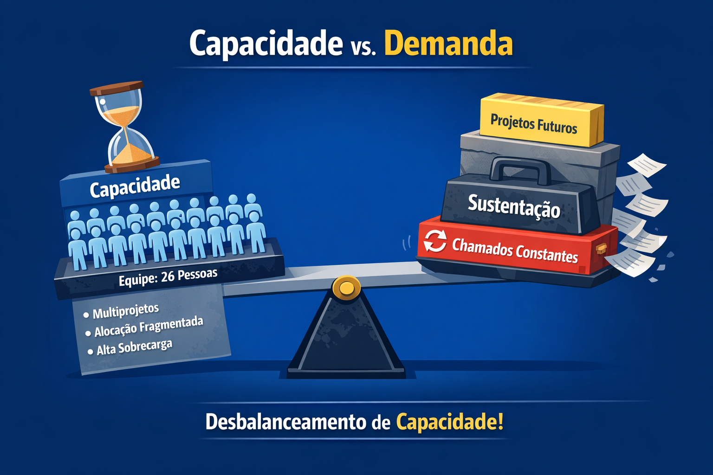
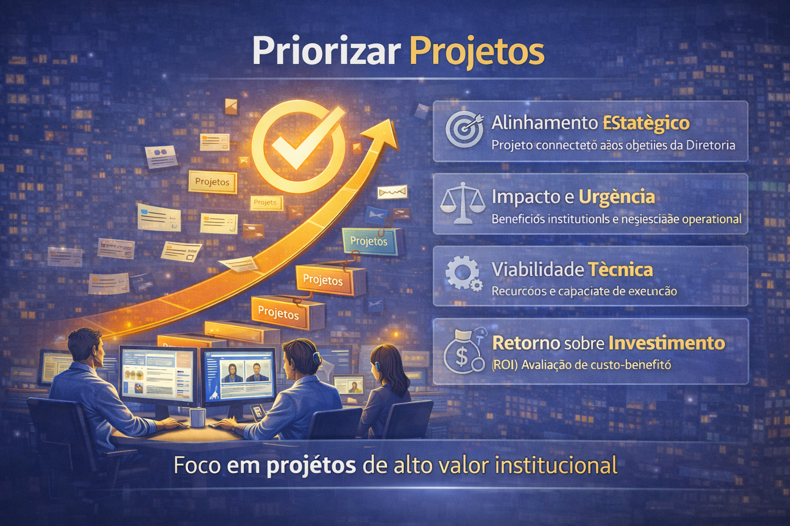
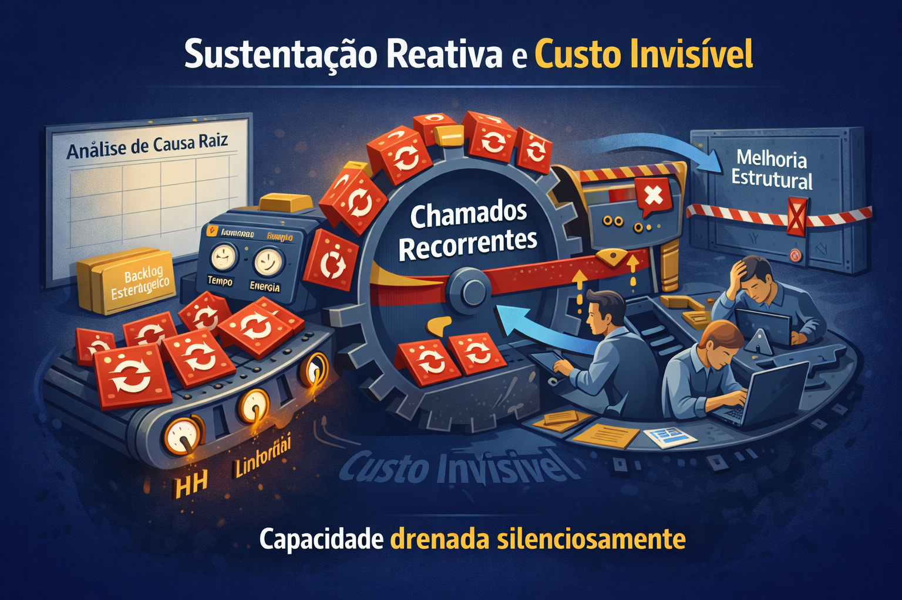
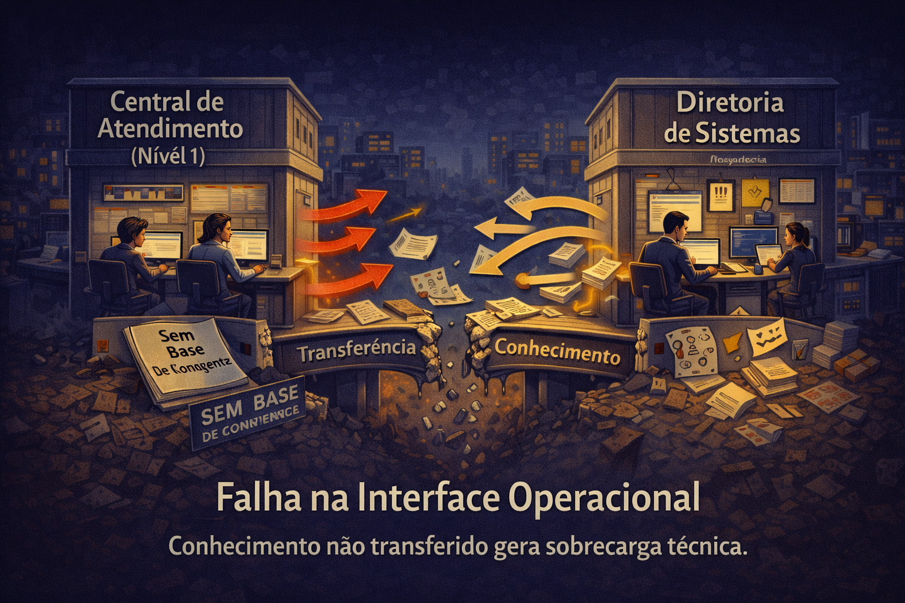
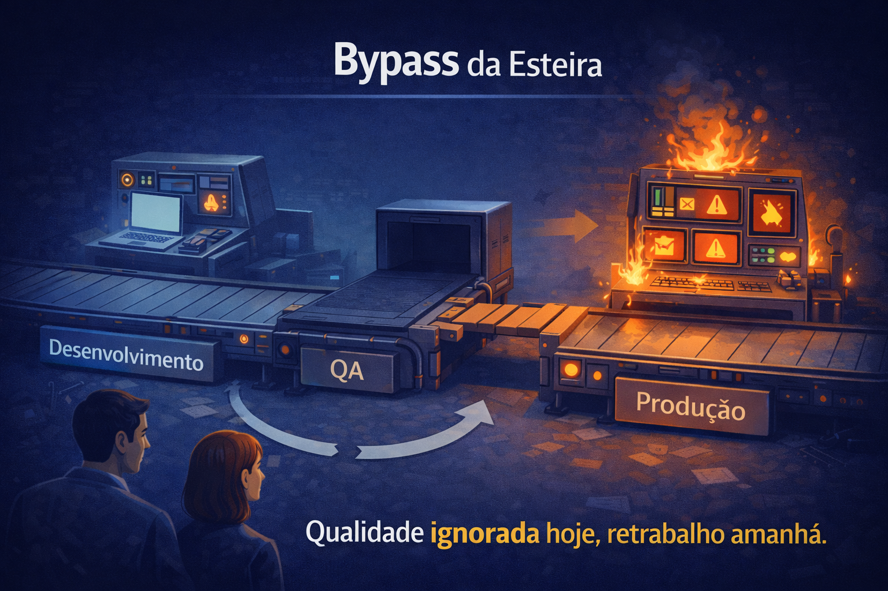
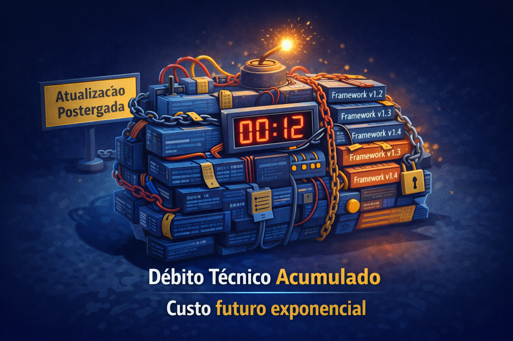
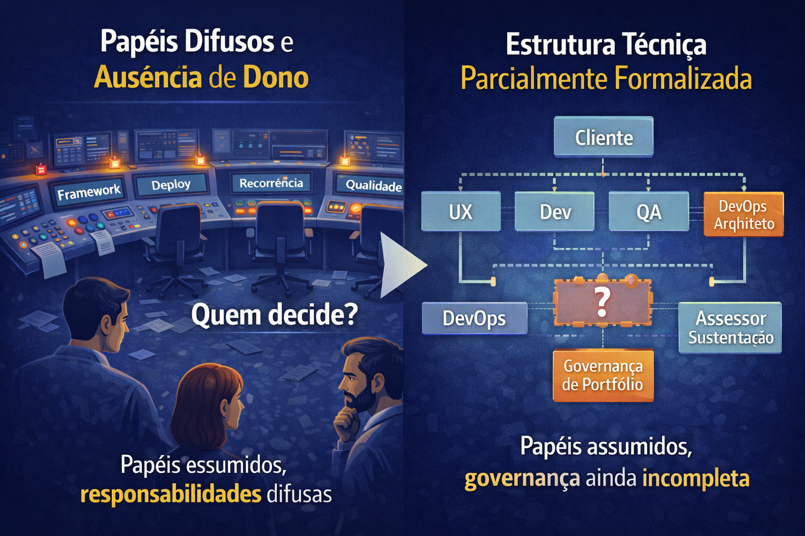
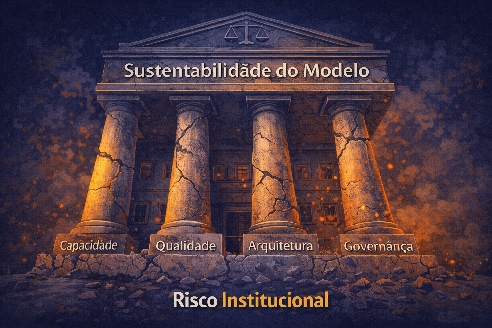

A Realidade Operacional
Capacidade finita, demanda crescente e pressão por inovação.

Capacidade vs Demanda
- Hoje temos 26 pessoas
- Projetos estratégicos + sustentação
- Capacidade é finita
- Demanda não é
Multialocação Crônica
- Pessoas em múltiplos projetos
- Sustentação em paralelo
- Urgências competem com entregas
- Fragmentação reduz eficiência real
Ferramenta de acompanhamento
- Objetivo: centralizar demanda, priorização e execução
- Problema atual: dispersão → baixa visibilidade → multialocação
- Piloto: Taiga (projetos) + integração com rotina da equipe
- Resultado esperado: previsibilidade, foco e transparência

Priorização de Projetos
Priorização de Projetos com TI
-
Alinhamento estratégico
Projetos conectados aos objetivos da Diretoria
-
Impacto e urgência
Benefícios institucionais e necessidade operacional
-
Viabilidade técnica
Recursos e capacidade de execução
-
Retorno sobre investimento
Avaliação de custo-benefício

Sustentação Reativa / Custo Invisível
- Chamados recorrentes
- Tratamento paliativo
- Custo invisível (não vira projeto)
- Consome homem-hora diariamente
Atendimento a Chamados
- Interações nem sempre registradas
- Status inconsistentes entre chamados
- Dificuldade de monitorar SLA
- Risco de perda de rastreabilidade

Interface com Nível 1
- Triagem inicial externa
- Transferência de conhecimento frágil
- Dúvidas viram chamados técnicos
- Sobrecarga artificial
Causas Estruturais
Qualidade, documentação, evolução tecnológica e governança.

Bypass da Qualidade
- Implementação vai direto para produção
- QA fora do fluxo estruturado
- Retrabalho posterior
- Instabilidade acumulada
Fragilidade de Documentação
- Ausência de topologia e README padronizado
- Wiki não estruturada
- Dependência de pessoas
- Sem documentação não há sustentabilidade

Débito Técnico e Framework Defasado
- Atualizações postergadas
- Aumento do custo futuro
- Risco de segurança
- Risco institucional acumulado

Papéis e Governança Parcial
- UX, Dev, QA, DevOps, mantenedores
- Formalizar responsabilidades estratégicas
- Arquitetura e governança de portfólio
- Clareza estrutural
Impacto Institucional
Quando os fatores se somam, o resultado deixa de ser operacional e vira risco.

Risco Institucional
- Sustentação reativa
- Débito técnico
- Fragmentação estrutural
- Risco acumulado
Oportunidades Estratégicas
Ampliar capacidade efetiva e estruturar governança.
IA como Alavanca
- Acelerar desenvolvimento
- Apoiar testes e QA
- Documentação automatizada
- Produtividade ampliada
IA como Estratégia
- Governança de dados
- Arquitetura estruturada
- Segurança e compliance
- IA como política institucional
A Virada
Modelo sustentável e plano estruturado.
Modelo Sustentável
- Separação clara de fluxos
- Governança formalizada
- Qualidade integrada
- Redução da recorrência
Plano de Transição (90 dias)
- Estabilização
- Organização
- Evolução estrutural
- Base reorganizada em 90 dias
Escala de Trabalho
- Modelo atual: 3 dias presenciais
- Troca de dia precisa ser comunicada
- Ausência deve ser registrada
- Comunicação formal garante alinhamento